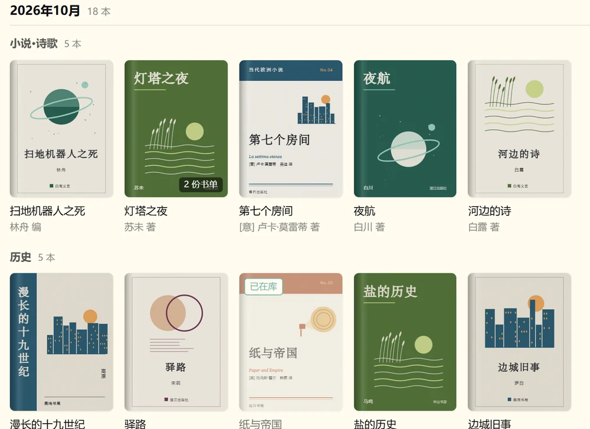
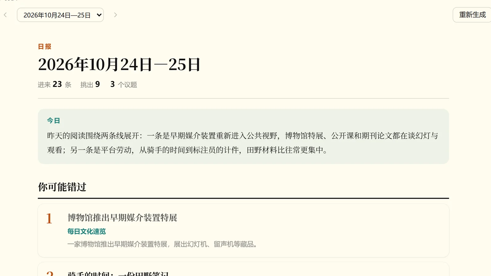
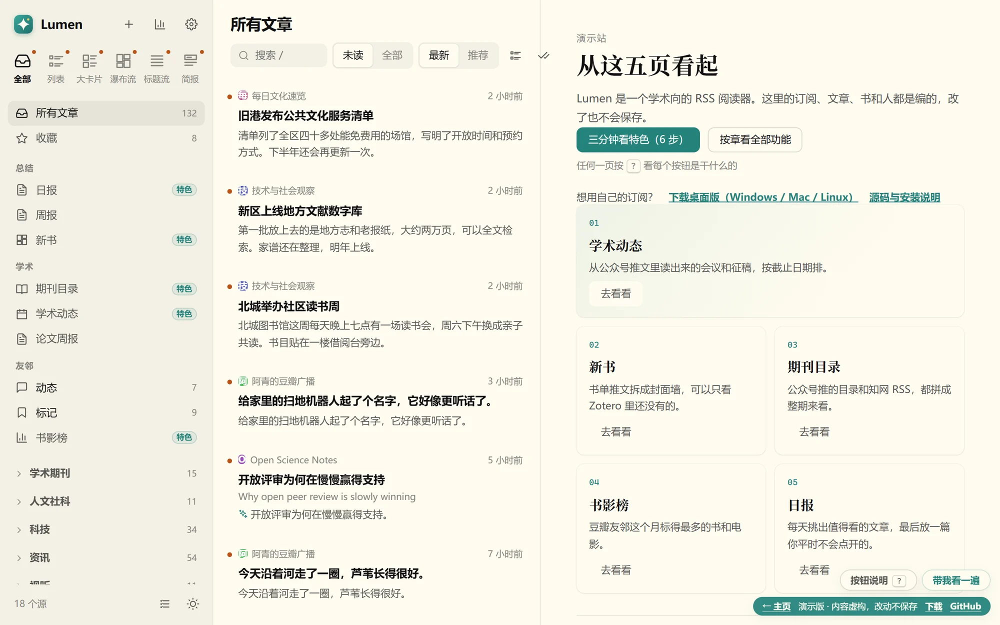

- 同一场会，好几个号各发一遍
- 截止日期得自己另外记
开源的 RSS 阅读器，装在自己电脑上
订了几十个学术公众号，
会议和新书还是会漏。
Lumen 把这些推文读一遍：会议按截止日期排，书单拆成一本本书，期刊目录拼成整期。
Windows Mac · Apple 芯片 Mac · Intel Linux v{{VERSION}} · 所有版本
只读你订阅的源。AI 接口自己填，不填也能用。数据都在本机，不用注册账号。
为什么
订阅一多，要的那条就找不到了。
- 订什么自己定
- 目录和书单还是一整篇推文，要自己一条条翻
- 会议按截止日期排，几个号发的同一场只留一条
- 书单拆成一本本书，看得到 Zotero 里有没有
- 期刊目录拼成整期，人大复印转载的标回原刊
- 每天一份日报，挑出值得看的
特色7 项
打开它，先看这几页。
会议、征稿和讲座，按还剩几天排
书单里的书，一本本摆出来

被人大复印转载的，在原刊目录里标出来
每天一份日报，最后一篇是你平时不会点开的

友邻最近在读什么
外文文章，标题先给中文
开放评审为何在慢慢赢得支持
Why open peer review is slowly winning
Journals that publish their reviews are no longer rare.公开审稿意见的期刊，已经不再少见。
Readers can now see how a paper changed.读者能看到一篇论文是怎么改出来的。
双语译文原文t
搜「骑手」，没写这两个字的也能找到
骑手
按词 · 3 篇意思相近 · 7 篇
和骑手一起跑完一天的单
平台算法下的配送时间没有「骑手」二字
